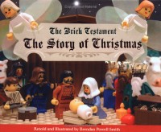

1st
April
2007
Vintage Easter Art

posted in Art, Food, Midcentury | 1 Comment


My bacon costume inspired the delightful Miss Delirium Tremens to send me a sweet message… turns out she’s got a great bacon costume of her own, but hers is decidedly more sexay than mine. Click here to see it… it’s street legal, but probably NSFW.
This website features a life-sized image of a whale. Of course, even if you have an extremely large monitor you’ll still need to scroll the photo to see it all.

[via John Nack]

These are just some of the lovely vintage plaster wall fish that have been posted on the new blog, Bowling Trophy. There’s no name attached to the blog, but if it is who I think it is, then his one-two punch of excellent photography skills matched with uncanny thrifting ability should combine into a really swell blog.
I think these fish are great; they often have really great shaded paint jobs that make them look almost like sugar candy or marzipan. Their happy and alluring demeanor always reminds me of the underwater sequence in Bedknobs and Broomsticks.

My friend Dale Sizer did this cool painting of plaster wall fish on a slice of a log a few years ago.
posted in Animation, Art, Design, Midcentury | 3 Comments

The great Disney blog 2719 Hyperion has a wonderful post about one of my favorite overlooked Disney characters J. Audubon Woodlore, the park ranger. I fell in love with him as a kid when I saw the classic “In The Bag”, where he makes up a little song and dance to convince the bears to clean up the park. Apparently In The Bag was such a hit that it inspired a record called the “Humphrey Hop.”

The short is available on a Disney DVD called Disney Rarities. Check out 2719 Hyperion’s overview of this great oft-forgotten Disney character.
UPDATE: I need to remember to search Youtube before making any post. In The Bag is on Youtube right now. I’m not sure how long it will be on there, but for now, enjoy!
Okay JYC readers, are you awake? I’m going to post these nifty icons, and then you tell us what they are. Not just where they’re from, but let us know what each icon actually represents. After they’ve all been guessed (or if too much time passes by) I’ll post more about this fantastic set. Post your guesses in the comments.
posted in Art, Design, Disney | 5 Comments
These Clipper Cards make me want to go settle some new territory. An amazing use of color and typography.

[Via John Nack, I believe]
I’m fascinated by this art installation by Columbian artist Doris Salcedo. In 2003, Salcedo stacked 1,600 wooden chairs in an empty space between two buildings in Istanbul, for the International Istanbul Biennale.
Where did she get so many chairs? How did she get them in there? How did she get them out? What was done with them when the installation was removed? WHAT DOES IT ALL MEAN???
No really, what does it all mean? I can’t find any information on what her inspiration or message was for this. The website linked above notes “Salcedo often takes specific historical events as her point of departure,” so I get the idea I’m missing part of the story. I don’t need to know what it means to think it’s very cool, though. [via design*sponge]
posted in Art | Comments Off
I grew up without religion — the subject just never really came up. Which left me pretty confused when I was sent to a heavily Christian daycare, but that’s another story for another day (the short version: I just couldn’t figure out why every day they told us the same fairy tale, and it wasn’t even a very good one). Over time I was exposed here & there to bits & pieces of the Bible, but it was all a muddled mystery to me, and sitting down to try to read it one day got me nowhere — I think I got lost in a sea of “begat”s. My interest in the Bible wasn’t religious — I was just tired of getting stuck on Biblical crossword puzzle hints.
Then, one day a few years ago, Hanford pointed me to a new version of the Bible: The Brick Testament.

The Reverend Brendan Powell Smith (who is a reverend like my imaginary cat is the pope) is creating the whole Bible by using only Legos. This speaks to me on several levels: 1) It’s Legos. So I’m in. 2) It’s a pretty straightforward telling of the stories, and tries to be as true to the Bible as one can be when using little plastic yellow robot-men. 3) It’s not trying to sell me a way of life, it’s just trying to translate a book. Amen.
It was a Rosetta stone for me — finally, I was able to learn the backstories that went with the characters I was only vaguely able to identify before. Kind of like getting a CliffsNotes version of the Marvel universe. Only more socially relevant, I guess. It was much appreciated.
The funny thing is, right during that time when I was using the Brick Testament to get up to speed with the Bible, Hanford & I were at a local drugstore, and we saw a young couple checking out children’s illustrated Bible story books. Hanford thought that one of them was the Right Reverend Smith — we found out later that it was. Hanford still kicks himself for not going up to chat with him.
Appropriately, the Reverend has illustrated Bible story books of his own — perfect for the religiously confused tyke in your life!
The Brick Testament: The Story of Christmas
The Brick Testament: Stories from the Book of Genesis
 The Brick Testament: The Ten Commandments
The Brick Testament: The Ten Commandments
posted in Art | Comments Off